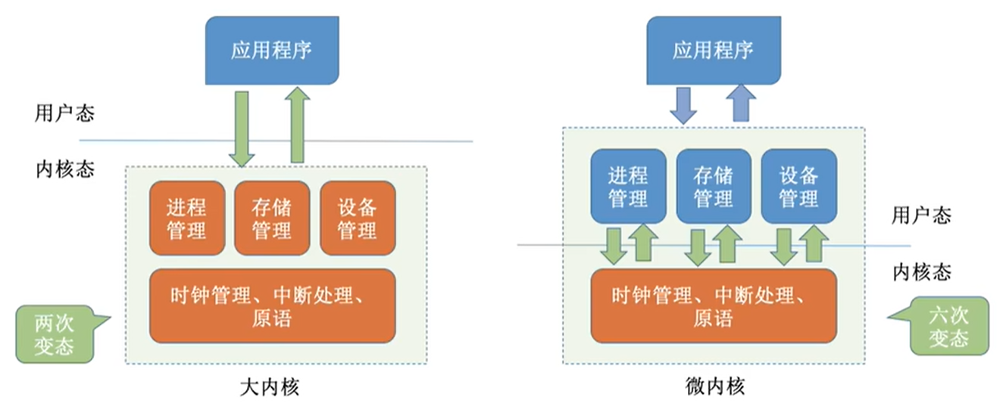
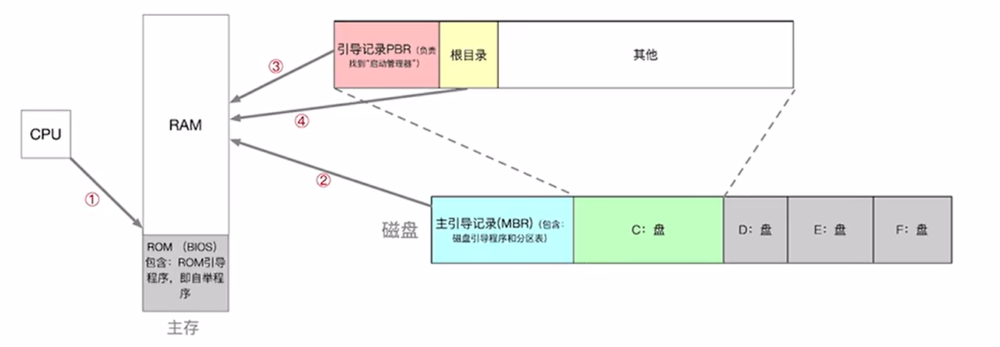
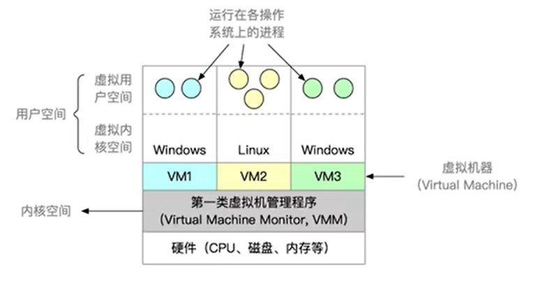
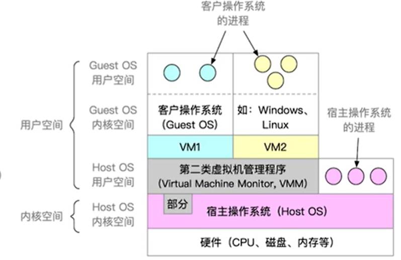

考研之操作系统——计算机系统概述
计算机系统概述
操作系统预备知识
基本概念
操作系统$(Operating System, OS)$：控制和管理整个计算机系统的硬件和软件资源，并合理地组织调度计算机的工作和资源的分配；以提供给用户和其他软件方便的接口和环境；它是计算机系统中最基本的系统软件。
上面的概念可以大致总结为如下特点：
- 系统资源的管理者：将程序数据载入内存等
- 向上层提供方便易用的服务：$GUI$图形化用户接口、联机/脱机命令接口、程序接口等
- 最接近硬件的软件：对硬件进行拓展，将$CPU$、硬盘、内存等硬件组合起来实现更复杂的功能
基本特征
操作系统有如下四个特征：
并发：两个及以上的事件在同一时间间隔内发生，宏观上是同时发生，微观上是交替发生。
注意：并行是两个及以上的事件在同一时刻同时发生，不论是宏观还是微观。
操作系统就是伴随“多道程序技术”出现的，但需要注意下面两点：
- 单核$CPU$同一时刻只能执行一个程序，各程序需要并发执行
- 多核$CPU$同一时刻可以执行多个程序，多个程序可以并行执行
共享：系统中的资源可供内存中多个并发执行的进程共同使用。
共享分为如下两种：
- 互斥共享：一个时间段内只允许一个进程访问该资源，例如摄像头、麦克风只能分配给一个进程使用
- 同时共享：一个时间段内允许多个进程“同时”访问该资源，例如文件传输可以多个进程同时进行
虚拟：一个物理上的实体变成多个逻辑上的对应物
虚拟技术有如下两类：
空分复用技术：将物理资源在空间上划分为多个独立的、隔离的部分，每个部分可以同时被分配给不同的用户或进程使用
虚拟存储器就是通过空分复用技术，将物理存储器变为虚拟存储器，以便从逻辑上扩充存储器的容量。
时分复用技术：将时间分成微小的时间片，多个进程或用户轮流使用同一个物理资源，从宏观上看是同时在使用，但从微观上看是分时独占的
虚拟处理器就是通过时分复用技术，虽然只有一个处理器，但它能同时为多个进程服务。
异步：在多道程序环境下，允许程序并发执行，但是由于资源有限，进程的执行只能是“走走停停”
操作系统运行环境
运行机制
电脑中运行的程序分为应用程序和内核程序，内核程序就是用来实现操作系统这一系统软件的，若干内核程序组成了操作系统内核$(Kernel)$，这就是操作系统的核心部分。
程序中的指令分为如下两种：
- 特权指令：只能由内核程序使用，例如内存清零指令
- 非特权指令：由应用程序使用，例如加法指令
$CPU$在设计之初就可以分清特权和非特权指令，然而为了让它能够区分当前运行的程序，将其分成了如下两种状态：
- 内核态：当$CPU$处于内核态时，正在运行的是内核程序，可以使用特权指令
- 用户态：当$CPU$处于用户态时，正在运行的是应用程序，只能使用非特权指令
在$CPU$内部有一个程序状态字寄存器$(PSW)$，其中有一个二进制位，$1$表示内核态，$0$表示用户态，以此来区分两种状态。
刚开机时，$CPU$进入内核态，适当时机内核程序会执行特权指令将PSW设置为用户态，之后就可以正常运行应用程序了，如果此时$CPU$内部被植入一条特权指令，那么会引发中断信号，$CPU$立即运行处理中断的内核程序，处理完成后再次进入用户态。
因此内核态→用户态是特权指令实现，用户态→内核态由中断引发
中断和异常
中断是操作系统从用户态转为内核态的唯一途径，主要分为内中断和外中断两种情况。
内中断：与当前执行的指令有关，信号来自$CPU$内部，也就是异常
异常分为三种：
- 陷阱/陷入：由陷入指令引发，是应用程序有意为之
- 故障：由错误条件引起，可能被内核修复，例如缺页故障
- 终止：由致命错误引起，无法被内核修复，直接终止应用程序，例如整数除0
外中断：与当前执行的指令无关，信号来自$CPU$外部
外中断主要分为两种：
- 时钟中断：时钟每隔一个时间片就会给$CPU$发一个时钟中断信号
- $I/O$中断请求
对于不同的中断信号，$CPU$会根据中断向量表查询中断处理程序并在内核态中运行。
系统调用
凡是和共享资源有关的操作都要通过系统调用向操作系统内核提出服务请求，由内核代为完成，这样保证了系统的稳定性和安全性。
系统调用主要有以下几类：
- 设备管理：完成设备的请求/释放/启动等功能
- 文件管理：完成文件的读/写/创建/删除等功能
- 进程控制：完成进程的创建/撤销/阻塞/唤醒等功能
- 进程通信：完成进程之间的消息传递/信号传递等功能
- 内存管理：完成内存的分配/回收等功能
系统调用的过程：
- 应用程序向$CPU$的寄存器中传递参数
- 应用程序使用陷入指令引发内中断并使$CPU$切换为内核态
- 系统调用入口程序检查参数并判断系统调用服务的类型
- 系统调用处理程序在$CPU$运行
- 运行完成后$CPU$转为用户态，继续运行先前的应用程序
注意：陷入指令是非特权指令，在用户态中发出
操作系统层次结构
操作系统的内核
操作系统的内核包含最核心的功能，大致有如下几类：
- 时钟管理：计时功能的实现
- 中断处理：处理各类中断
- 原语：这类程序具有原子性，必须一次完成，不能被中断，例如设备驱动、$CPU$切换等
- 进程管理：进程的控制和通信等
- ……
包含上述所有功能的内核叫做大内核，只包含时钟管理、中断处理和原语的叫做微内核。

如上图所示，大内核切换状态的次数少，微内核切换的次数多，由于频繁切换状态会降低性能，因此大内核的性能要高于微内核。
操作系统的结构
现代的操作系统有如下技术架构：
- 分层结构：这类架构每层可单向调用更低一层的接口，THE操作系统就使用该架构
- 优点：便于调试和验证每一层的功能
- 缺点：效率较低，需要一层一层进行调用
- 模块化：这类架构将内核划分为多个模块，内核=主模块+可加载内核模块，各模块互相协作，$Linux$内核就是采用这一架构
- 优点
- 模块间逻辑清晰易于维护
- 支持动态加载新的内核模块，增强操作系统的适应性
- 任何模块都可以直接调用其他模块，无需采用消息传递进行通信，效率较高
- 缺点：模块之间相互依赖，不易调试和验证
- 优点
- 外核：内核负责进程调度、进程通信等功能；外核在内核态运行，负责为用户进程分配未经抽象的硬件资源，且由外核负责保证资源使用安全。这样减少了虚拟硬件资源的“映射层”，提升效率，但是会使系统变得更复杂。
操作系统引导
操作系统引导简单来说就是电脑从上电到开机的过程。

从上面的示意图我们可以总结出操作系统引导的步骤如下：
- $CPU$从主存(就是运行内存)的$ROM$(断电后数据不丢失)中读取特定地址的指令并执行引导程序
- 将磁盘的主引导记录$(MBR)$读入内存进行扫描，并找到活动分区($C$盘)
- 从活动分区读入引导记录$(PBR)$并执行其中的程序
- 从根目录中找到完整的操作系统初始化程序(启动管理器)并执行，完成“开机”的一系列动作
BIOS程序$(Basic{\quad}Input/Output{\quad}System)$：$BIOS$ 是固化在主板上的基本输入输出系统，是计算机启动第一个运行的软件，存放在$ROM$中。它会进行硬件初始化和自检，然后查找引导程序并执行。这也就是说引导程序包含在$BIOS$中，并作为其功能的最后一步执行。
虚拟机
虚拟机：使用虚拟化技术，将一台物理机器虚拟化为多台虚拟机器$(Virtual Machine,VM)$，每个虚拟机器都可以独立运行一个操作系统。
虚拟机管理程序可分为两种，一种是直接运行在硬件上，另一种运行在宿主的操作系统上。

如上是第一类虚拟机管理程序，直接运行在硬件上。这种管理程序对$CPU$采用时分复用技术，让每台虚拟机都觉得自己有一个独立的$CPU$；对硬件、内存资源进行划分，让每一台虚拟机都拥有相同的硬件资源。
注意：只有虚拟机管理程序真正处于内核态，可以使用特权指令。当上层虚拟机在虚拟内核态使用特权指令时会被管理程序截获，并模拟出指令执行成功的效果，实际上由管理程序代为执行。但是近几年$CPU$的特权指令被划分为$Ring0、Ring1、Ring2、Ring3$级别，权限依次递减。这样第一类虚拟机管理程序只执行$Ring0$级别指令，当上层虚拟机执行$Ring0$级别以下的指令时就无需截获，提升了虚拟机的性能。

上图展示的是第二类虚拟机管理程序，运行在宿主的操作系统上，使用最多的就是$VirtualBox$和$VMware{\quad}Workstation$。这类管理程序想要为虚拟机分配资源时，只能向宿主的操作系统发出请求，不能直接分配硬件资源。
| 第一类虚拟机管理程序 | 第二类虚拟机管理程序 | |
|---|---|---|
| 对物理资源的控制权 | 能够直接控制和分配物理资源 | 依赖宿主操作系统分配物理资源 |
| 资源分配方式 | 虚拟机要在原本的硬盘上自己分配存储空间，这是未经抽象的物理硬盘 | 虚拟机拥有自己的虚拟硬盘，但实际上是宿主机上的一个大文件 虚拟机分配到的内存是虚拟内存 |
| 性能 | 性能更好 | 性能较差，需要宿主机作为“中介” |
| 可支持的虚拟机数量 | 支持更多虚拟机，不需要和宿主操作系统争夺硬件资源 | 支持更少虚拟机，宿主机的操作系统也需要硬件资源 |
| 虚拟机的可迁移性 | 更差 | 更好，只需要将虚拟机镜像文件导出即可在另一宿主机上使用，商业化应用广泛 |
| 运行模式 | 运行在最高特权级$(Ring0)$，可以执行最高特权的指令 | 运行在用户态，部分运行在内核态；虚拟机发出的系统调用会被截获，之后变成管理程序对宿主机操作系统的系统调用 |